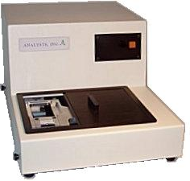
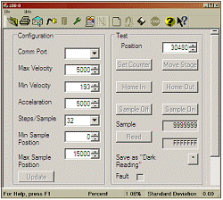
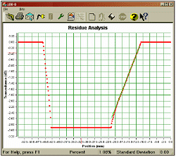

|
|
|
Oil Testing Machine
Analysts Inc. sells oil testing services
all over the world. The machines used to provide this service were originally designed
and made in the 1990's. However the analysis requirements had increased over the
prior decade, and new machines were required to meet more demanding specifications.
- Selection and prototype of electronics components including:
- Power Supplies
- Stepper motor stage and controller
- A/D conversion components
- Optics subsystem for illumination and measurement
- Manufacture of initial test prototype
- Main control circuit board
- Mechanics and Enclosure components
- Microprocessor firmware
- Stepper motor control
- A/D conversion
- USB interface to PC Host
- BootLoader for remote firmware update
- PC Host Software
- Test station configuraton and control
- Statistical data analysis of test results

- Graphical presentation of test results

- Context sensitive help system
- Integration with Windows for saving, storing, and viewing results files
The new machine was completed in late 2008 with more advanced analysis capabilties
and far greater accuracy The machine is ready for manufacturing of units for use
in all the clients facilities in 2009.
|